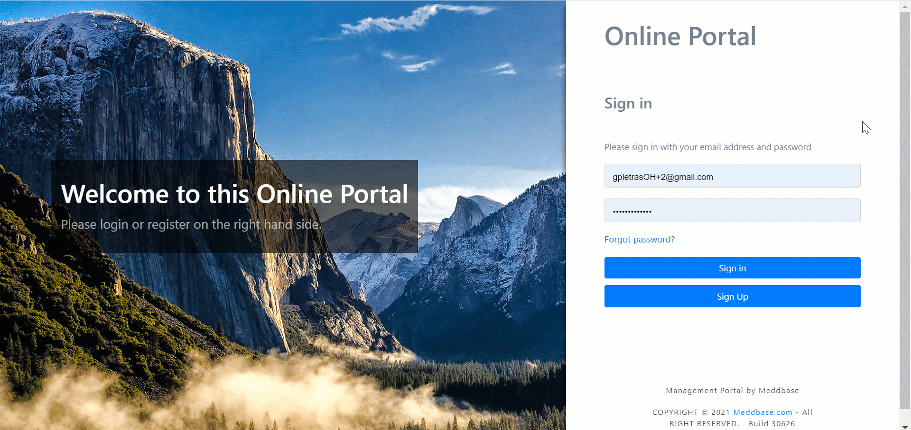
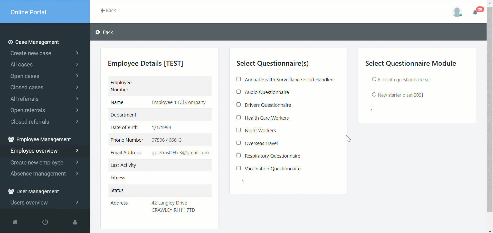
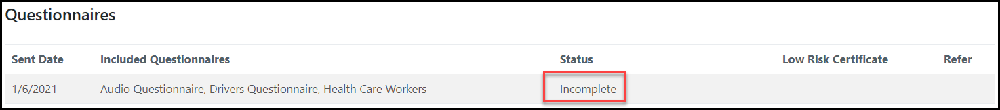

The Pre-Placement Questionnaire (PPQ) system is designed for employers looking to send pre-placement questionnaires* to their employees. Each questionnaire can be configured with certain triggers that, when hit, will feedback a status** to the employer.
* To request a new PPQ please contact Meddbase Support via a support ticket or reach out to your Project Manager or Account Manager.
** The PPQ system specifically hides all the employee’s responses for confidentiality reasons and only exposes the Status to the employer. When requesting a new PPQ, the questions and the answers triggering specific statuses can be defined.
This article will outline the workflow of a manager sending a PPQ to an employee.
To send a questionnaire to an employee, the manager would need to:-

Questionnaires can also be bundled into modules and sent as a group. To create a new module, a manager needs to:-
The questionnaire module will now be available in the Send Questionnaire Module section. To send a module to an employee, the manager simply selects it and clicks Send.

Once sent, the questionnaire will appear on the employee’s profile with a Status of Incomplete.

Once completed, the manager will be shown the status of the questionnaire.